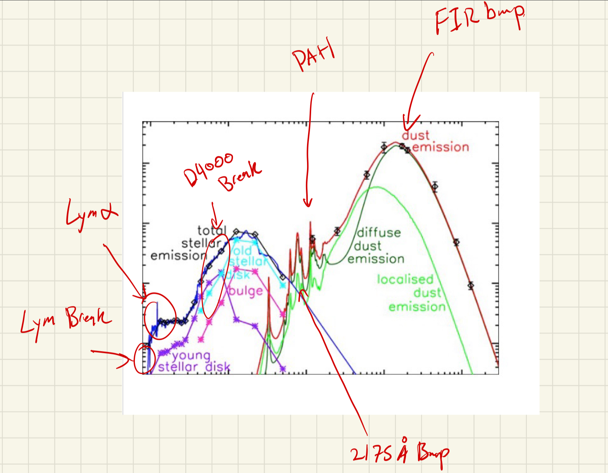

So I SUCK at radiation and I wanted to get a veryyyy coarse brush up on it because it seems to be quite useful for galaxies. Below is a speed run through some of the basics.
So the very basics: we start with Maxwell's equations \[\nabla \cdot E = 4\pi \rho_e\] \[\nabla \times E = -\frac{1}{c}\frac{\partial B}{\partial t}\] \[\nabla \cdot B = 0\] \[\nabla \times B = \frac{1}{c}\frac{\partial E}{\partial t} + \frac{4\pi}{c}J\] We can derive the induction equation just by taking the curl of the second equation \[\nabla \times (\nabla \times E) + \frac{1}{c^2}\frac{\partial^2 E}{\partial t^2} = \frac{4\pi}{c^2}\frac{\partial}{\partial t} J\] We can then apply vector calc identity \[\nabla \times (\nabla \times E) = \nabla (\nabla \cdot E) - \nabla^2 E\] and we can replace \[\nabla^2 E - \frac{1}{c^2}\frac{\partial^2 E}{\partial t^2} = 0\] Assuming that the current density is proportional to the electric field (it gets swallowed to the same derivative)
We clearly see that this is the generic wave equation giving us light!
We can apply the fourier transform to get the dispersion relation \[k^2 E = \frac{1}{c^2}\frac{\partial^2 E}{\partial t^2}\] \[k^2 E = \frac{1}{c^2}w^2 E\] \[w^2 = c^2 k^2\] \[v_p = \frac{w}{k} = c\] \[v_g = \frac{dw}{dk} = c\] And so they are non despersive! and inphase!
We note that the fields is represented as a complex field.
What we want to get out is energy density or the flux of this light and that is done through the Poynting vector. The poynting vector is defined as a directional flux. And is defined as the CROSS product of the electric and magnetic fields.
Intuitively this is basically saying that since the E field induces a B field and vice versa that the direction of energy should be perpendicular to both. to both at the sametime. \[\vec{S} = \vec{E} \times \vec{B}\] Since these must be real we really have if the wave is going in \(\hat z\) direction then we have \[\vec{S} = Re[\vec{E}] \times Re[\vec{B}] = \frac{1}{2} Re(E) \times [\hat{z} \times Re(E)]\] \[S = \frac{1}{2} |Re(E)]^2 \hat z\]
We know that the energy density in the frequency space is the same as the one in time space (off by a factor of \(2\pi\)) and so we do the following FLUX: \[F = \int_\mathbb{R} |Re(E(t)]^2 dt = \int_0^\infty |\hat E(w)|^2 dw\]
To start, let us assume we are in Local Thermodynamic Equilibrium (LTE). This means that on a local scale (scale where the physical values don't change much) in the time interval where things don't appear to change much and that we are in thermodynamic equilibrium (meaning for every reaction there is equal amount of reaction in the opposite direction).
We also assume things are in ideal gas: meaning particles are points and there are no attractive or repulsive forces between them. No potential energy!
This gives a distribution function ((\ +\) for Bosons and (\ -\) for Fermions) at an energy \(\epsilon\) with a chemical potential \(\mu\) and temperature \(T\). \[n(\epsilon) = \frac{1}{e^{(\epsilon-\mu)/kT} \pm 1}\]
Consider non-degenerate gas we have \[n(\epsilon) = \frac{1}{e^{(\epsilon-\mu)/kT} - 1} \Rightarrow n(\epsilon) \approx e^{(\epsilon-\mu)/kT} \] If we have some quantum occupancy number \(g\) called the Gaunt factor \[n(\epsilon) = \frac{g}{h^3} e^{(\epsilon-\mu)/kT} \] We can replace energy \(mc^2+p^2/2m\) with \(\epsilon\) and we get the following: \[n(\epsilon) = \frac{g}{h^3} e^{(mc^2-\mu)/kT} e^{p^2/2mkT} \] You can derive this generically this occupation number. One can take this to then derive intensity. \[\boxed{I_\nu = \frac{2h\nu^3}{c^2} n}\] Why is this the case?? \[\text{Total Energy} = [\text{Energy per photon}] \times [\text{Photons per state}] \times [\text{Number of states}]\] \[dE = (h\nu) \times \mathcal{N} \times \left( 2 \frac{d^3x d^3p}{h^3} \right)\] By classical definitions \[ dE = I_\nu dA dt d\nu d\Omega\] And \(d^3x = dA \times (c dt)\) and \(d^3p = \left( \frac{h\nu}{c} \right)^2 \left( \frac{h}{c} d\nu \right) d\Omega = \frac{h^3 \nu^2}{c^3} d\nu d\Omega\) This allows us to replace and get what we wanted!
Given for Photons the distribution function is \[n_\gamma = \frac{1}{e^{h\nu/kT} - 1}\] Using what we know from above: \[\boxed{I_\nu = \frac{2h\nu^3}{c^2} \frac{1}{e^{h\nu/kT} - 1}}\] This is the plank distribution function.
We can derive the radiative transfer equation.
Imagine you have some light \(I_\nu\) and it goes through some box that blocks some light that change in light \(d I_\nu\) is related to how big of a box you went through and the density of that box and the incoming light. \[d I_\nu = -\alpha I_\nu ds\] Now imagine that the box is transparent and has a light bulb inside that can boost you: \[d I_\nu = j_\nu ds\] Together a box with both blockage and light source can be simply thought of as \[dI_\nu = \text{Light Gained} - \text{Light Lost}\] \[\boxed{d I_\nu =j_\nu ds -\alpha I_\nu ds} \] We will soon see what things can be sources of light and what can absorb light!
There are three categories of lines:
Light that is emitted is \(h\nu = E_2-E_1\).
The rate of spontaneous emission is given is \[R_{2\to 1} = N_2 A_{21}\] Where \(A_{21}\) is the Einstein A coefficient and is a constant that is determined by the transition probability and number of atoms in those states.
Then we have stimulated emission which now relates to the photons occupation number which can trigger a jump down. \[R_{2\to 1} = N_2 A_{21}n(\nu)\] Together \[R_{2\to 1} = N_2 A_{21}(1+n(\nu))\]
Absorbtion is the opposite of emission. Eats some photons \[R_{1\to 2} = N_1 B_{12}n(\nu)\]
LTE Balances these two reactions remember! \[N_2 A_{21}(1+n(\nu)) = N_1 B_{12}n(\nu)\] \[\frac{N_2}{g_2}(1+n(\nu)) = \frac{N_1}{g_1}n(\nu)\] \[R_{1\to 2} = \frac{g_2 N_1}{g_1} An(\nu)\]
We realize that we don't even need to know about the \(N_2\) particles to know that we can get to the second states! In fact we can do so for the flipped case as well going up to down. This in LTE removes the need to know about \(N_2, N_1\) and all things now depend on \(A, n_\gamma\)!
So each of these lines, it would appear as a spike/delta function. However this is not the case. In reality there are broadening effects like doppler broadening, recoil, collisional and natural broadening due to quantum mechanical effects. Thus typically we multiply this delta function with a Voigt profile which we denote as \(\phi(\nu)\).
The Voigt profile combines the natural and collision broadening and doppler effects into one ugly profile that I do not want to derive. TLDR: it is a convolution of the Lorentzian profile with a Gaussian But I will reference here because I am lazy Voigt profile
Now let us put this back into our radiative transfer equation. We have a new source term: \[j_\nu = \frac{h\nu}{4\pi} N_2 A_{21} \phi(\nu)\] as well as a new sink term: \[\alpha_\nu = \frac{h\nu}{4\pi} (N_1 B_{12} - N_2 B_{21}) \phi(\nu)\]
If you assume the LTE assumption we can actually derive the blackbody intensity from scratch: \[\frac{N_2}{g_2}(1 + n(\nu)) = \frac{N_1}{g_1}n(\nu)\] rearrange \[n(\nu) = \frac{\frac{N_2}{g_2}}{\frac{N_1}{g_1} - \frac{N_2}{g_2}} = \frac{1}{\frac{N_1 g_2}{N_2 g_1} - 1}\] Assume boltzman distribution \[\frac{N_1}{N_2} = \frac{g_1}{g_2} e^{h\nu / k_B T}\] \[n(\nu) = \frac{1}{\left( \frac{g_1}{g_2} e^{h\nu / k_B T} \right) \frac{g_2}{g_1} - 1}\] Bose-Einstein distribution from scratch!
Emission or Absorbtion? this is determined by how the intensity changes. If the intensity goes up then its emission and if it goes down its absorbtion. How is this determined? \(T_{exc} > T_{b}\) then Emission. where the excitation temperature (temperature associated to the energy release of an excited state) is greater than the background continuum temperature \(T_{b}\).
Recombination is the process where an electron is free and then is bound and recombines. The opposite of ionize. The cost ionization for a hydrogen atom is \(13.6 eV\). Also called the Rydberg energy \(Ry\). The inverse process to recombination is called photoionization.
There are various processes for a hydrogen atom called different names:
the \(\alpha,\beta,\gamma\) are when you fall from the first excited state above the base state. Balmer \(\alpha\) is when you fall from \(n=3\) to \(n=2\) as an example.
The energy released in the w_{n\lapha} meaning for the alpha transitions for any kind of series \(n\) (can be lyman, balmer, paschen, etc.) \[\omega_{n\alpha} = \frac{E_{n+1} - E_n}{\hbar} = \frac{\text{Ry}}{\hbar} \frac{2n+1}{n^2(n+1)^2}\]
There is also of course an associated transition rate here \(A\) which depends on \(1/n^5\)!
Useful in ionized mediums
21 cm is the hyperfine structure transition of the hydrogen atom. Basically spin flips between the proton and the electron from misaligned to aligned spin. In the processes it lets of some energy which are photons of \(1.420 GHz\) or 21cm. These have some huge Einstein A coefficents being once every 10 million years.
Useful in cold neutral mediums
Super hot stuff. As the name suggests, the electron starts out completely free (unbound to any atom) a nd ends up completely free. It never gets captured.
These are contiums NOT lines. For emission we have: \[j_\nu \propto \frac{n_e n_i}{\sqrt{T}} e^{-h\nu / (k_B T)}\] We see with higher temperatures it gets harder because they are too fast to brake and interact!
Opposite: Free-free absorption (sometimes called inverse bremsstrahlung) happens when a photon hits a free electron at the exact moment the electron is passing an ion. The electron absorbs the photon and flies away faster. \[\alpha_\nu^{ff} \propto \frac{n_e n_i}{T^{1.35} \nu^{2.1}}\]
In the Radiative Transfer Equation, we simply add the free-free emission \(j_\nu^{ff}\) and free-free absorption \(\alpha_\nu^{ff}\) to any bound-bound terms we already have.
If you point a telescope array at a dense, hot HII region (like the Orion Nebula), you will see it glowing brightly at high radio frequencies (due to free-free emission). But as you tune your receivers to lower and lower frequencies, the free-free absorption takes over.
We see that there is a very strong supression and cutoff at higher temperatures. This is useful because it helps probe temperatures of hot CGM which we can talk about later.
Collisional excitation and de-excitation is not something triggered by photons. Instead, triggered by medium/particles colliding with each other.
Like before, these things have specific rates. Excitation rate: \(n_e C_{12}\) and de-excitation rate: \(n_e C_{21}\). This becomes yet another term you can add into the source or since component of the radiative transfer equation.
Critical Density: \[\text{Rate of Spontaneous Emission } (A_{21}) = \text{Rate of Collisional De-excitation } (n_e C_{21})\]
We can tease out density! Consider when there are two near by lines. We can get their ratios: \[R_n = \frac{I(6716)}{I(6731)}\] Their intensities are related to this \[R_n = \frac{N_2 A_{21} \nu_{21}}{N_3 A_{31} \nu_{31}}\] We can solve for that steady state equation: \[N_1 (n_e q_{13}) + N_2 (n_e q_{23}) = N_3 (A_{31} + n_e q_{31} + n_e q_{32})\] solving for the ratio gets us \[\frac{N_2}{N_3} = \frac{q_{12} A_{31} + n_e [q_{12} (q_{31} + q_{32}) + q_{13} q_{32}]}{q_{13} A_{21} + n_e [q_{13} (q_{21} + q_{23}) + q_{12} q_{23}]}\] This is allows us to put it back to the line ratio which gives us the electron density. Note that temperature is not sensitive because the lines are so close.
Temperature Measurements: made with the auroral lines and nebular lines and their ratios. \[R_T = \frac{I(5007) + I(4959)}{I(4363)} = \frac{N_2 A_{21} h\nu_{21}}{N_3 A_{32} h\nu_{32}}\] We can replace with temperature \[\frac{q_{12}}{q_{13}} \propto \exp\left(\frac{E_3 - E_2}{k_B T_e}\right)\] since we need the ratio of the number of excited states \[N_1 (n_e q_{12}) + N_3 A_{32} = N_2 (A_{21} + n_e q_{21})\] Which uses \(q_{12},q_{21}\). This is a low density limit and thus the density is not sensitive here.
So dust scatters light and also absorbs light. There are three regimes here:
The size of dust grains depend on the knee! where it transitions from Rayleigh to Mie scattering.
Emission: blackbody! However since the LTE temperature is low, it corresponds to a peak in emission at approximately the grain size! This means its a really inefficent emitter. Thus we have a modified blackbody: \[I_\nu \propto \nu^\beta B_\nu(T_{dust})\]
This creates the Far Infrared Bump!
With the theory in place, here’s how these processes show up observationally and what we use them for.
Far Infrared (FIR) Bump: Thermal re-radiation of starlight—UV and optical photons absorbed by dust and reprocessed into the far-IR. It’s a steady-state blackbody-like spectrum in thermal equilibrium from heating. Useful for: star formation (reprocessed UV light), total dust mass and temperature from fitting, and leaky-box models (e.g. where metals go).
PAH Features: Polycyclic aromatic hydrocarbons produce sharp emission features. UV absorption excites molecular vibrations, so they trace star formation from UV light and are an important ISM cooling channel (e.g. photoelectric heating). Also used for redshift estimation.
2175 Å Bump: Mid-UV absorption feature linked to PAHs, appearing on the far left (blue/UV) side of the spectrum.
H I 21 cm: Spin-flip (hyperfine) transition in the ground state of neutral hydrogen. Radio wavelength. Probes cold neutral gas. Used for: ISM structure, galaxy rotation curves, Milky Way kinematics.
C II fine-structure: Fine-structure transitions (within the ground electron state while ionized). Low-energy, excited at ~100 K. Far-IR/submillimeter. Dominant cooling of the cold neutral medium. Used for: tracing star formation (heated gas), ISM cooling.
CO: Rotational transitions in a low-energy regime, observed in radio/millimeter. Probes molecular H2 and hence star-forming gas. Used for: molecular gas mass, SFR tracers.
O III auroral/nebular: Temperature indicator from ionized gas—electrons excite O III. Nebular lines (lower energy) and auroral lines (higher energy) appear in the optical. Temperature breaks the line-strength vs abundance degeneracy for abundance calibration.
O II, S II: Doublets used for density diagnostics in H II regions (blue/UV/optical). Line ratios give electron density and calibrate collisional de-excitation for abundance work.
Hα: Balmer 3→2 transition at 656.3 nm (red). Recombination line: ionized gas recombines and cascades down. Used for: SFR (UV ionizes H II regions), dust reddening (Hα/Hβ ratio), warm ionized medium, and high-z galaxies (main SFR indicator).
Hβ: Balmer 4→2 transition at ~486 nm (bluer than Hα).
Ca II triplet: Three IR absorption lines. Bound-bound absorption by background light passing through cooler gas. Probes dense, hot environments (e.g. stellar populations).
Balmer absorption: Hydrogen in stellar atmospheres absorbing outgoing photons. Strongest in A-type stars.
Na D, Mg b triplet: Sodium D and magnesium b absorption in stellar photospheres.
D4000 break: Break at 4000 Å from metal absorption in cool, old stellar atmospheres. More metal lines block UV light. Older, metal-rich galaxies have a larger break. Used for: stellar age, redshift. Works best when metal-rich.
Ca II H & K: Strong absorption features from calcium in stellar atmospheres.
Lyα: 2→1 transition, largest energy jump in hydrogen. UV. Produced by recombination or collisional excitation. Used for: high-redshift galaxies, hot ISM cooling.
Lyman break: Hydrogen ionization absorbs photons with λ < 912 Å (far-UV). The Lyman break is at the edge of this absorption; the next strong feature is Lyα. Used for: Lyman-break/dropout technique for galaxy redshifts.
